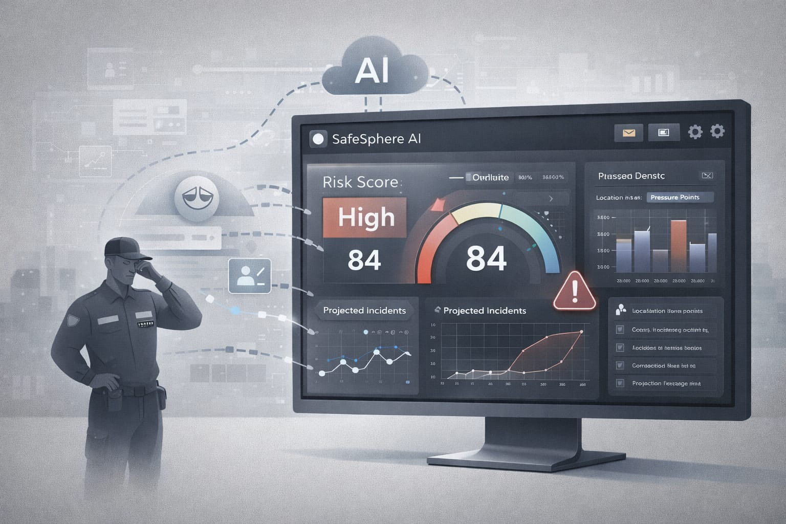
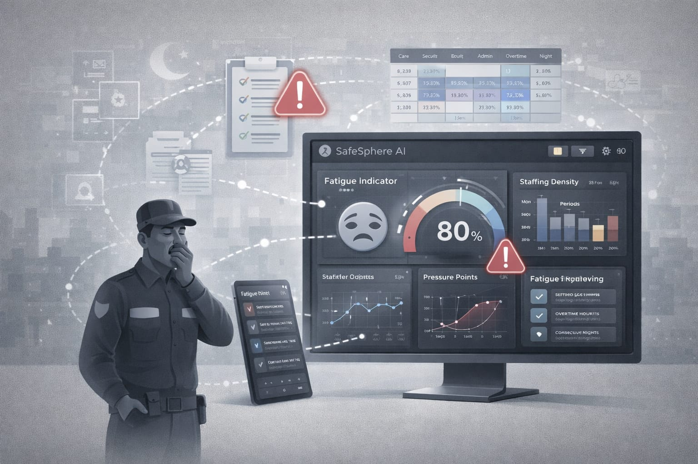
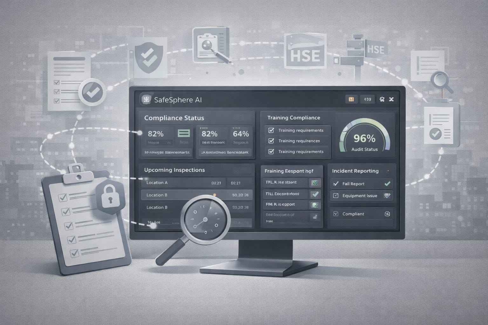

SafeSphere AI is a predictive safety intelligence platform that helps security, care and facilities organisations identify operational risks before incidents occur.
SafeSphere AI is a predictive safety and workforce intelligence platform designed to help organisations detect operational risks early and improve workforce decision-making.
The platform analyses workforce behaviour, incident history and staffing patterns using advanced analytics to identify hidden risk indicators before safety incidents occur.
By transforming operational data into predictive insights, SafeSphere AI enables organisations to strengthen workplace safety, maintain compliance readiness and improve operational efficiency across security, care and facilities sectors.
SafeSphere AI was founded by Maryam Ayub, with the vision of improving organisational safety through intelligent data analysis and predictive risk management technology.
The platform focuses on helping organisations in safety-critical sectors identify operational risks earlier and build safer working environments.
By combining artificial intelligence with operational safety intelligence, SafeSphere AI aims to deliver smarter and more proactive workforce risk management solutions.
View LinkedInSafeSphere AI transforms workforce data and incident records into predictive safety intelligence. The platform analyses operational patterns to detect risk signals early and help organisations prevent incidents before they occur.
SafeSphere AI securely collects operational information such as incident reports, workforce schedules, staffing patterns and environmental signals from organisational systems.
Machine learning models analyse behavioural trends, historical incidents and workforce activity to identify hidden risk patterns and operational vulnerabilities.

The platform generates predictive risk scores by modelling workforce fatigue, staffing density and operational pressure points across shifts and locations.
Managers receive real-time dashboards, alerts and recommendations that help them prevent incidents, improve compliance readiness and optimise workforce safety.
SafeSphere AI is a predictive safety and workforce intelligence platform that helps organisations detect operational risks early, improve compliance visibility and optimise workforce performance.
AI algorithms analyse workforce behaviour, shift structures and historical incident patterns to identify emerging risks before they escalate into safety incidents.

SafeSphere AI monitors complex shift patterns and overtime exposure to identify fatigue risks that may affect workforce performance and safety outcomes.
AI-powered rota analysis identifies staffing gaps, high-risk deployments and operational pressure points within workforce schedules.

The platform converts operational data into regulatory compliance insights aligned with UK safety and workforce standards.
Machine learning models identify behavioural anomalies across teams that may signal operational stress or emerging safety risks.
Interactive dashboards provide real-time insights into risk indicators, workforce performance and operational safety metrics.
Flexible subscription plans designed for security, care and facilities organisations to deploy predictive safety and workforce intelligence across operations.
per organisation / month
per organisation / month
for large organisations
Learn more about how SafeSphere AI helps organisations predict safety risks and improve workforce intelligence.
Interested in learning how SafeSphere AI can help your organisation predict safety risks and improve workforce intelligence? Send us a message and our team will contact you.
Technical help and product guidance
Partnerships and collaboration opportunities
Schedule a SafeSphere AI platform demo